K562 Neither DNase matched - State 3:PromF (n=34)
K562 Neither DNase matched - State 3:PromF (n=34)
[
See group descriptions
]
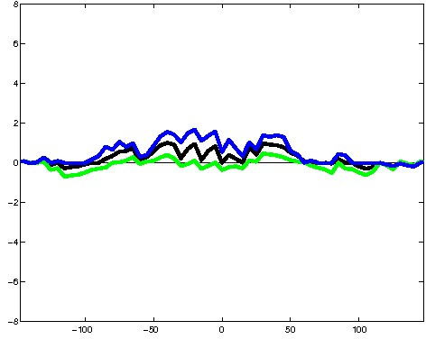
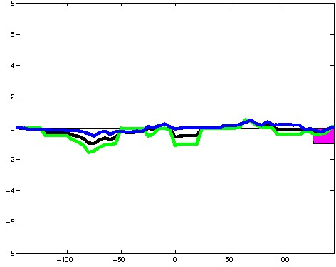
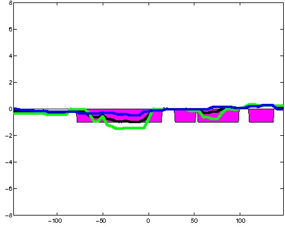
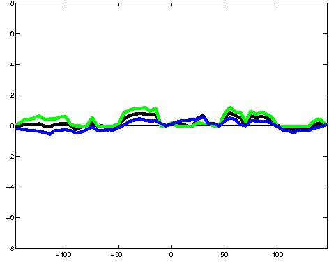
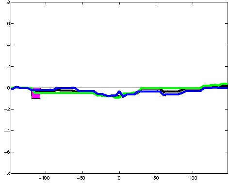
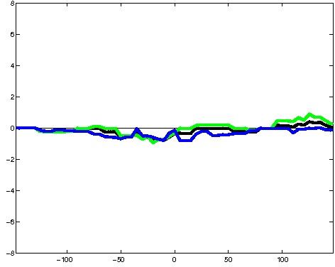
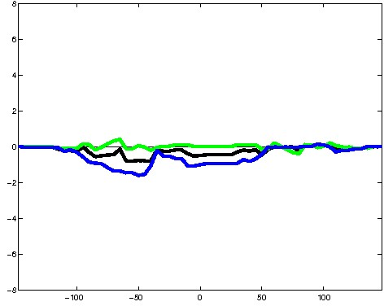
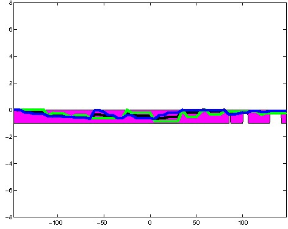
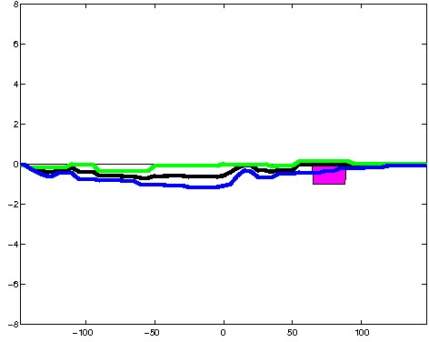
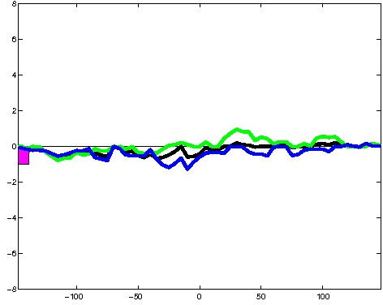
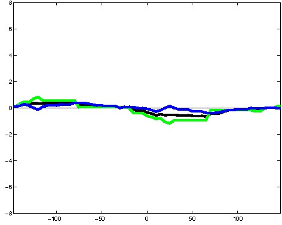
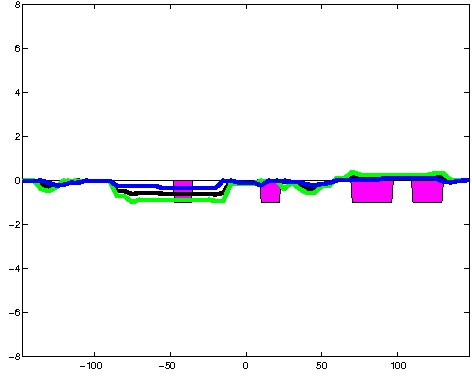
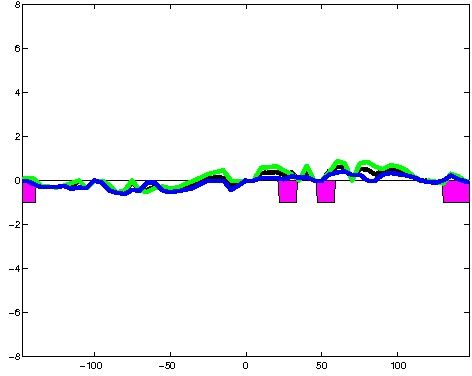
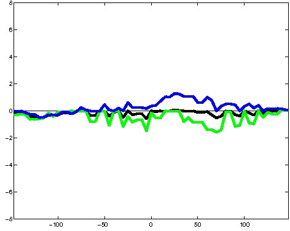
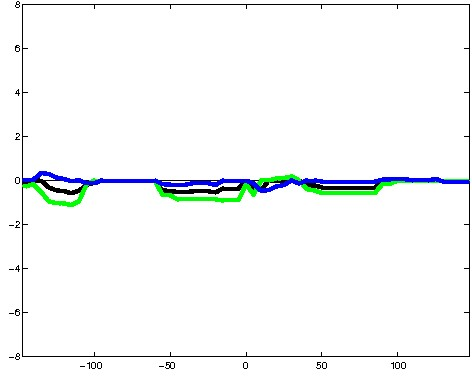
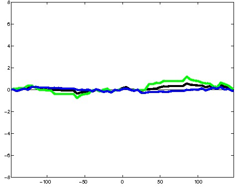
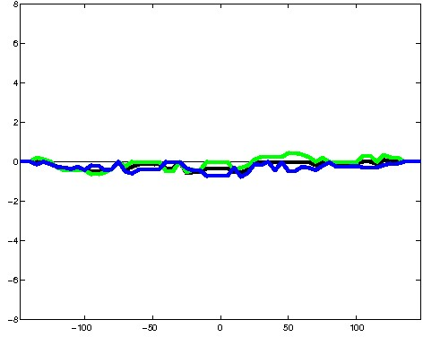
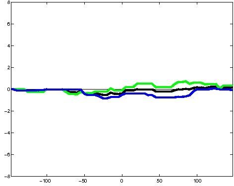
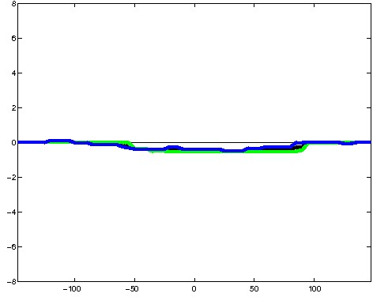
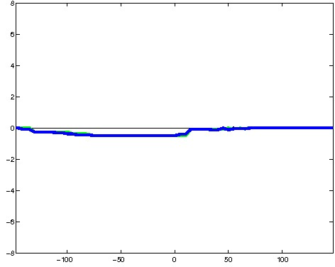
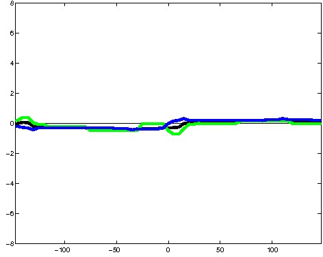
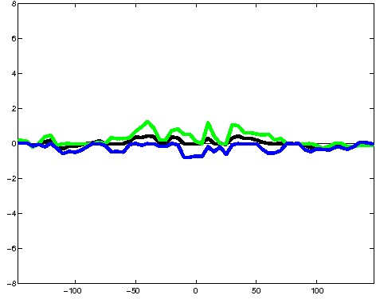
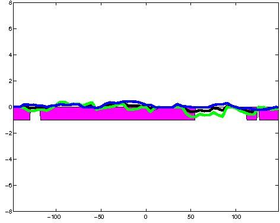
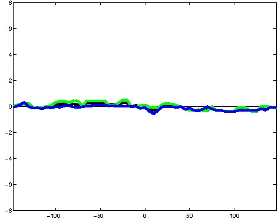
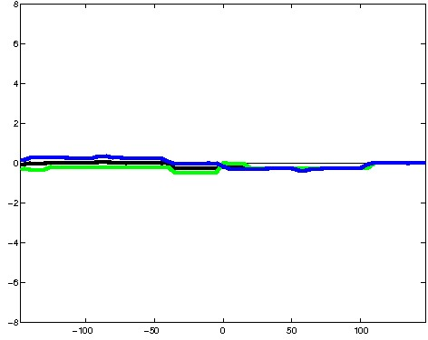
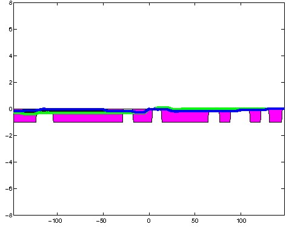
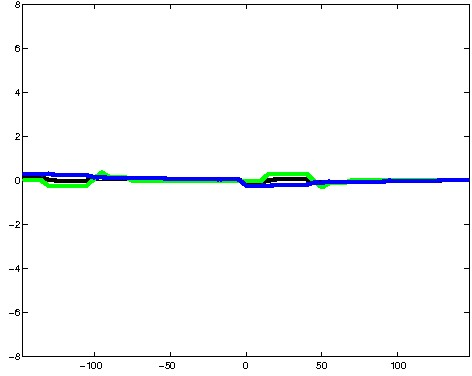
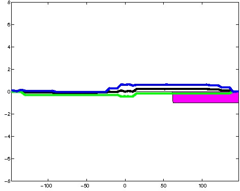
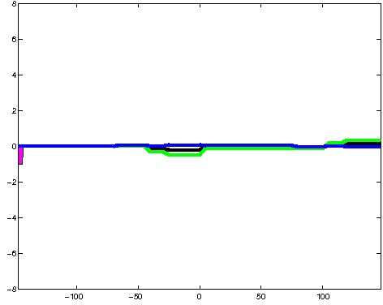
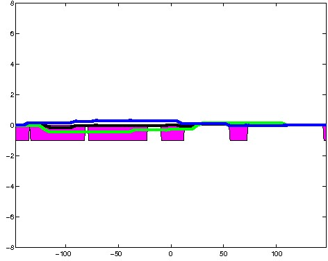
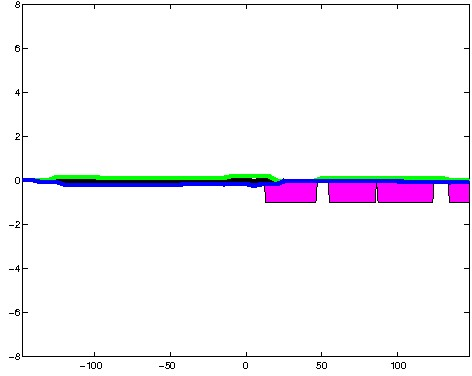
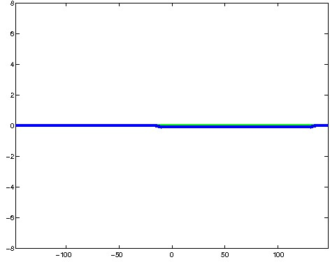
; picked in K562 (state 3:PromF, DNase); matched; chr21:30,472,289-30,472,583 (295bp)") 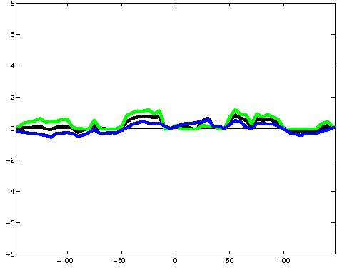
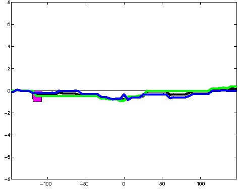
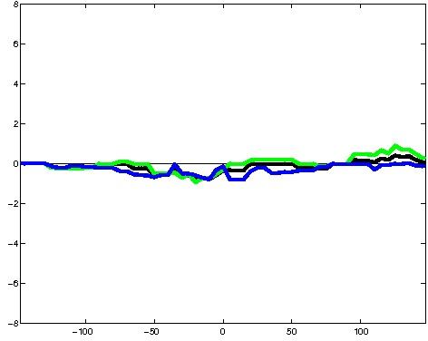
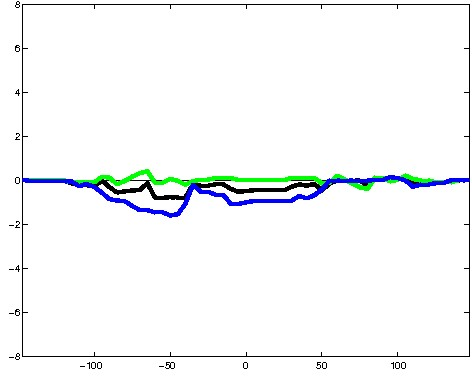
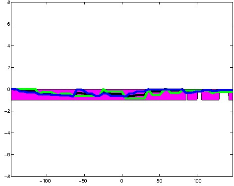
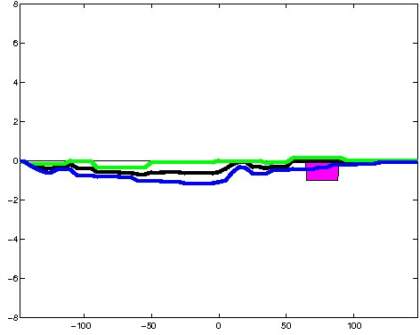
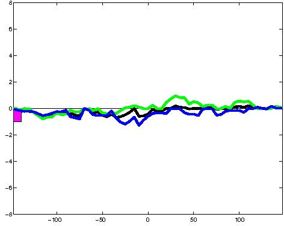
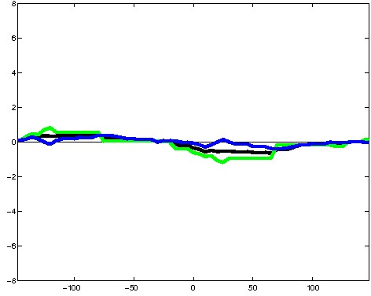
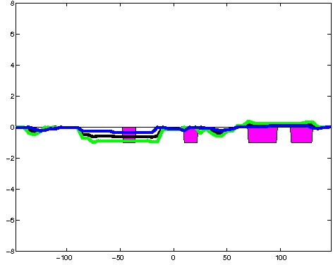
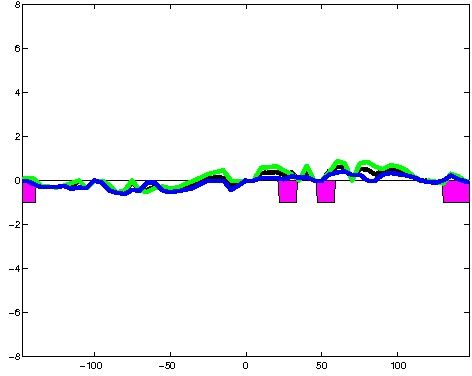
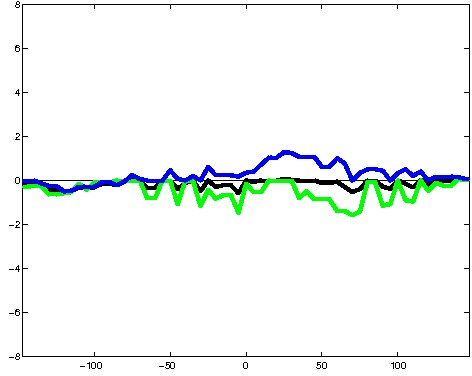
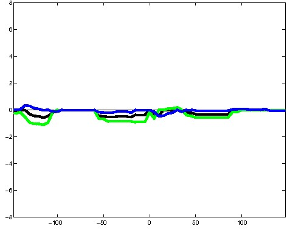
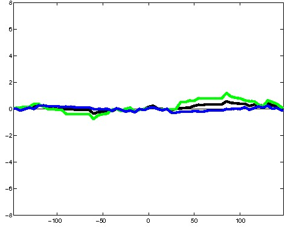
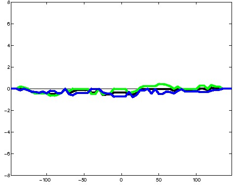
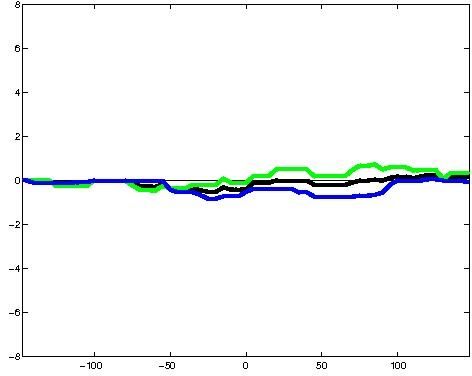
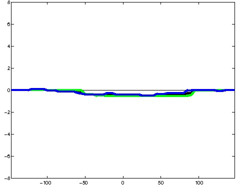
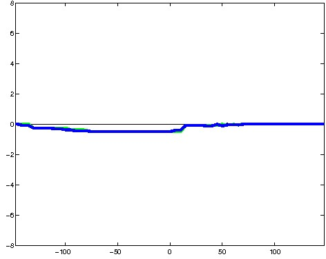
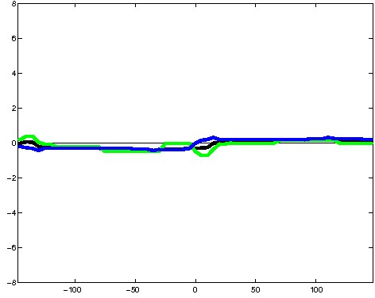


; picked in K562 (state 3:PromF, DNase); matched; chr6:28,791,349-28,791,643 (295bp)") 


